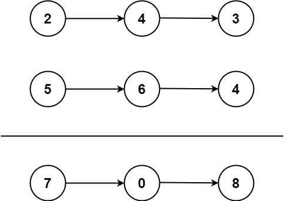

题面
给你两个 非空 的链表，表示两个非负的整数。它们每位数字都是按照 逆序 的方式存储的，并且每个节点只能存储 一位 数字。
请你将两个数相加，并以相同形式返回一个表示和的链表。
你可以假设除了数字 0 之外，这两个数都不会以 0 开头。
示例 1：

输入： l1 = [2,4,3], l2 = [5,6,4]
输出：[7,0,8]
解释： 342 + 465 = 807.示例 2：
输入： l1 = [0], l2 = [0]
输出：[0]示例 3：
输入： l1 = [9,9,9,9,9,9,9], l2 = [9,9,9,9]
输出：[8,9,9,9,0,0,0,1]提示：
- 每个链表中的节点数在范围
[1, 100]内 0 <= Node.val <= 9- 题目数据保证列表表示的数字不含前导零
解法一 字符串转换
思路
- 遍历两个链表，把每个节点的值拼成字符串
- 链表是逆序存储的（个位在前），所以字符串反转后才是实际数字
- 相加后，把结果字符串再反转，逐位构造链表节点
代码实现
class Solution:
def addTwoNumbers(self, l1: Optional[ListNode], l2: Optional[ListNode]) -> Optional[ListNode]:
s1, s2 = "", ""
while l1:
s1 += str(l1.val)
l1 = l1.next
while l2:
s2 += str(l2.val)
l2 = l2.next
num = int(s1[::-1]) + int(s2[::-1])
dum = cur = ListNode(0)
for ch in str(num)[::-1]:
cur.next = ListNode(int(ch))
cur = cur.next
return dum.next解法三 迭代模拟逐位相加
思路
- 和递归解法逻辑相同，用
carry记录进位，逐位相加构造新节点 - 循环条件
while l1 or l2 or carry != 0：三个都没有了才停 - 注意：这和递归的终止条件正好相反
- 递归终止条件：
l1 is None and l2 is None and carry == 0（三个都没了才返回） - 迭代继续条件：
l1 or l2 or carry != 0（只要有一个还有就继续） - 两者是同一件事的两面：递归说"什么时候停"，迭代说"什么时候继续"
代码实现
class Solution:
def addTwoNumbers(self, l1: Optional[ListNode], l2: Optional[ListNode]) -> Optional[ListNode]:
carry = 0
cur = dum = ListNode(0)
while l1 or l2 or carry != 0:
s = carry
if l1:
s += l1.val
l1 = l1.next
if l2:
s += l2.val
l2 = l2.next
cur.next = ListNode(s % 10)
carry = s // 10
cur = cur.next
return dum.next- 复杂度：时间 O(max(m,n))，空间 O(1)（不计输出链表）
解法二 递归模拟逐位相加
思路
- 每次递归只处理当前这一位：把两个链表当前节点的值和进位
carry加在一起，得到s s % 10：当前位的值，作为新节点的vals // 10：进位，传给下一次递归- 递归调用
self.addTwoNumbers(l1, l2, s//10)负责构造后续所有节点，返回值直接作为当前节点的next - 这是"去的路上就把当前工作做完"的递归模式：当前节点的值在递归前就算好了，不需要等递归返回后再处理，所以不需要在递归调用之后加额外操作
- 终止条件：
l1 is None and l2 is None and carry == 0——两个链表都走完且没有进位，不需要再建新节点，返回None（作为最后一个节点的next） - 为什么可以直接返回
None？因为ListNode的第二个参数就是next，None正好表示链表结尾
代码实现
class Solution:
def addTwoNumbers(self, l1: Optional[ListNode], l2: Optional[ListNode], carry=0) -> Optional[ListNode]:
if l1 is None and l2 is None and carry == 0:
return None
s = carry
if l1:
s += l1.val
l1 = l1.next
if l2:
s += l2.val
l2 = l2.next
return ListNode(s % 10, self.addTwoNumbers(l1, l2, s // 10))- 易错点：
- 函数签名必须加 `carry=0`：递归调用时需要传入进位，但 LeetCode 的入口只传
l1和l2，所以carry必须有默认值0，否则外部调用报错 - 必须写 `self.addTwoNumbers`，不能直接写 `addTwoNumbers`：Python 中方法属于类，必须通过
self访问，裸写函数名会报NameError
- 复杂度：时间 O(max(m,n))，空间 O(max(m,n))（递归调用栈）
递归总结 正向 与 反向
递归有两种模式，区别在于当前层的工作放在自调用之前还是之后：
正向递归：工作在自调用之前（去的路上做事）
# 示例：两数相加
s = carry + l1.val + l2.val # ← 先算出当前位
return ListNode(s % 10, recur(...)) # ← 递归结果直接当 next- 当前层不依赖递归返回的结果，先把自己该做的做完，把递归结果直接用作返回值的一部分
- 链表从头到尾构建（第一个节点最先创建，最先返回）
反向递归：工作在自调用之后（回来的路上做事）
# 示例：反转链表
res = recur(cur.next, cur) # ← 先递到底
cur.next = pre # ← 回来时才做事
return res- 当前层需要先等递归执行完，拿到结果或让后面的工作做完，再处理自己这一层
- 链表从尾到头处理（最深处最先执行，最后一层最先返回）
判断用哪种：问自己"当前这一步的工作，需不需要等递归先跑完？"
- 不需要 → 工作放前面，正向
- 需要 → 工作放后面，反向